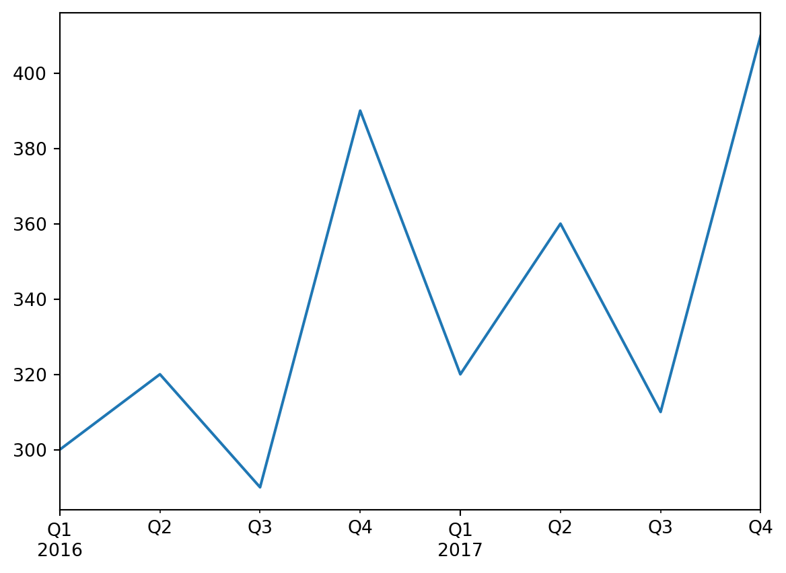

import pandas as pd
import numpy as np|
|
설정
먼저 pandas를 임포트합니다. 보통 pd로 임포트합니다:
시간 다루기
많은 데이터셋에 타임스탬프가 포함되어 있습니다. 판다스는 이런 데이터를 다루는데 뛰어납니다: * (2016Q3 같은) 기간과 (“monthly” 같은) 빈도를 표현할 수 있습니다. * 기간을 실제 타임스탬프로 변환하거나 그 반대로 변환할 수 있습니다. * 데이터를 리샘플링하고 원하는 방식으로 값을 모을 수 있습니다. * 시간대를 다룰 수 있습니다.
시간 범위
먼저 pd.date_range()를 사용해 시계열을 만들어 보죠. 이 함수는 2016년 10월 29일 5:30pm에서 시작하여 12시간마다 하나의 datetime을 담고 있는 DatetimeIndex를 반환합니다.
dates = pd.date_range('2016/10/29 5:30pm', periods=12, freq='H')
datesDatetimeIndex(['2016-10-29 17:30:00', '2016-10-29 18:30:00',
'2016-10-29 19:30:00', '2016-10-29 20:30:00',
'2016-10-29 21:30:00', '2016-10-29 22:30:00',
'2016-10-29 23:30:00', '2016-10-30 00:30:00',
'2016-10-30 01:30:00', '2016-10-30 02:30:00',
'2016-10-30 03:30:00', '2016-10-30 04:30:00'],
dtype='datetime64[ns]', freq='H')pd.date_range('2020-10-07', '2020-10-20', freq='3D')DatetimeIndex(['2020-10-07', '2020-10-10', '2020-10-13', '2020-10-16',
'2020-10-19'],
dtype='datetime64[ns]', freq='3D')이 DatetimeIndex를 Series의 인덱스로 사용할수 있습니다:
temperatures = [4.4,5.1,6.1,6.2,6.1,6.1,5.7,5.2,4.7,4.1,3.9,3.5]
temp_series = pd.Series(temperatures, dates)
temp_series2016-10-29 17:30:00 4.4
2016-10-29 18:30:00 5.1
2016-10-29 19:30:00 6.1
2016-10-29 20:30:00 6.2
2016-10-29 21:30:00 6.1
2016-10-29 22:30:00 6.1
2016-10-29 23:30:00 5.7
2016-10-30 00:30:00 5.2
2016-10-30 01:30:00 4.7
2016-10-30 02:30:00 4.1
2016-10-30 03:30:00 3.9
2016-10-30 04:30:00 3.5
Freq: H, dtype: float64이 시리즈를 그래프로 출력해 보죠:
%matplotlib inline
import matplotlib.pyplot as plt
temp_series.plot(kind="bar")
plt.grid(True)
plt.show()리샘플링
판다스는 매우 간단하게 시계열을 리샘플링할 수 있습니다. resample() 메서드를 호출하고 새로운 주기를 지정하면 됩니다:
temp_series_freq_2H = temp_series.resample("2H")
temp_series_freq_2H<pandas.core.resample.DatetimeIndexResampler object at 0x000001ED407C7EE0>리샘플링 연산은 사실 지연된 연산입니다. (https://ko.wikipedia.org/wiki/%EB%8A%90%EA%B8%8B%ED%95%9C_%EA%B3%84%EC%82%B0%EB%B2%95) 그래서 Series 객체 대신 DatetimeIndexResampler 객체가 반환됩니다. 실제 리샘플링 연산을 수행하려면 mean() 같은 메서드를 호출할 수 있습니다. 이 메서드는 연속적인 시간 쌍에 대해 평균을 계산합니다:
temp_series_freq_2H = temp_series_freq_2H.mean()temp_series_freq_2H2016-10-29 16:00:00 4.40
2016-10-29 18:00:00 5.60
2016-10-29 20:00:00 6.15
2016-10-29 22:00:00 5.90
2016-10-30 00:00:00 4.95
2016-10-30 02:00:00 4.00
2016-10-30 04:00:00 3.50
Freq: 2H, dtype: float64결과를 그래프로 출력해 보죠:
temp_series_freq_2H.plot(kind="bar")
plt.show()2시간 간격으로 어떻게 값이 수집되었는지 확인해 보세요. 예를 들어 6-8pm 간격을 보면 6:30pm에서 5.1이고 7:30pm에서 6.1입니다. 리샘플링 후에 5.1과 6.1의 평균인 5.6 하나를 얻었습니다. 평균말고 어떤 집계 함수(aggregation function)도 사용할 수 있습니다. 예를 들어 각 기간에서 최솟값을 찾을 수 있습니다:
temp_series_freq_2H = temp_series.resample("2H").mean()
temp_series_freq_2H2016-10-29 16:00:00 4.40
2016-10-29 18:00:00 5.60
2016-10-29 20:00:00 6.15
2016-10-29 22:00:00 5.90
2016-10-30 00:00:00 4.95
2016-10-30 02:00:00 4.00
2016-10-30 04:00:00 3.50
Freq: 2H, dtype: float64또는 동일한 효과를 내는 apply() 메서드를 사용할 수 있습니다:
temp_series_freq_2H = temp_series.resample("2H").apply(np.min)
temp_series_freq_2H2016-10-29 16:00:00 4.4
2016-10-29 18:00:00 5.1
2016-10-29 20:00:00 6.1
2016-10-29 22:00:00 5.7
2016-10-30 00:00:00 4.7
2016-10-30 02:00:00 3.9
2016-10-30 04:00:00 3.5
Freq: 2H, dtype: float64업샘플링과 보간
다운샘플링의 예를 보았습니다. 하지만 업샘플링(즉, 빈도를 높입니다)도 할 수 있습니다. 하지만 데이터에 구멍을 만듭니다:
temp_series_freq_15min = temp_series.resample("15Min").mean()
temp_series_freq_15min.head(n=10) # `head`는 상위 n 개의 값만 출력합니다2016-10-29 17:30:00 4.4
2016-10-29 17:45:00 NaN
2016-10-29 18:00:00 NaN
2016-10-29 18:15:00 NaN
2016-10-29 18:30:00 5.1
2016-10-29 18:45:00 NaN
2016-10-29 19:00:00 NaN
2016-10-29 19:15:00 NaN
2016-10-29 19:30:00 6.1
2016-10-29 19:45:00 NaN
Freq: 15T, dtype: float64한가지 방법은 보간으로 사이를 채우는 것입니다. 이렇게 하려면 interpolate() 메서드를 호출합니다. 기본값은 선형 보간이지만 3차 보간(cubic interpolation) 같은 다른 방법을 선택할 수 있습니다: https://bskyvision.com/789
temp_series_freq_15min = temp_series.resample("15Min").interpolate(method="cubic")
temp_series_freq_15min.head(n=10)2016-10-29 17:30:00 4.400000
2016-10-29 17:45:00 4.452911
2016-10-29 18:00:00 4.605113
2016-10-29 18:15:00 4.829758
2016-10-29 18:30:00 5.100000
2016-10-29 18:45:00 5.388992
2016-10-29 19:00:00 5.669887
2016-10-29 19:15:00 5.915839
2016-10-29 19:30:00 6.100000
2016-10-29 19:45:00 6.203621
Freq: 15T, dtype: float64temp_series.plot(label="Period: 1 hour")
temp_series_freq_15min.plot(label="Period: 15 minutes")
plt.legend()
plt.show()시간대
기본적으로 datetime은 단순합니다. 시간대(timezone)을 고려하지 않죠. 따라서 2016-10-30 02:30는 파리나 뉴욕이나 2016년 10월 30일 2:30pm입니다. tz_localize() 메서드로 시간대를 고려한 datetime을 만들 수 있습니다: https://www.timeanddate.com/time/map/
temp_series2016-10-29 17:30:00 4.4
2016-10-29 18:30:00 5.1
2016-10-29 19:30:00 6.1
2016-10-29 20:30:00 6.2
2016-10-29 21:30:00 6.1
2016-10-29 22:30:00 6.1
2016-10-29 23:30:00 5.7
2016-10-30 00:30:00 5.2
2016-10-30 01:30:00 4.7
2016-10-30 02:30:00 4.1
2016-10-30 03:30:00 3.9
2016-10-30 04:30:00 3.5
Freq: H, dtype: float64temp_series_ny = temp_series.tz_localize("America/New_York")
temp_series_ny2016-10-29 17:30:00-04:00 4.4
2016-10-29 18:30:00-04:00 5.1
2016-10-29 19:30:00-04:00 6.1
2016-10-29 20:30:00-04:00 6.2
2016-10-29 21:30:00-04:00 6.1
2016-10-29 22:30:00-04:00 6.1
2016-10-29 23:30:00-04:00 5.7
2016-10-30 00:30:00-04:00 5.2
2016-10-30 01:30:00-04:00 4.7
2016-10-30 02:30:00-04:00 4.1
2016-10-30 03:30:00-04:00 3.9
2016-10-30 04:30:00-04:00 3.5
dtype: float64모든 datetime에 -04:00이 추가됩니다. 즉 모든 시간은 UTC - 4시간을 의미합니다.
다음처럼 파리 시간대로 바꿀 수 있습니다:
temp_series_paris = temp_series_ny.tz_convert("Europe/Paris")
temp_series_paris2016-10-29 23:30:00+02:00 4.4
2016-10-30 00:30:00+02:00 5.1
2016-10-30 01:30:00+02:00 6.1
2016-10-30 02:30:00+02:00 6.2
2016-10-30 02:30:00+01:00 6.1
2016-10-30 03:30:00+01:00 6.1
2016-10-30 04:30:00+01:00 5.7
2016-10-30 05:30:00+01:00 5.2
2016-10-30 06:30:00+01:00 4.7
2016-10-30 07:30:00+01:00 4.1
2016-10-30 08:30:00+01:00 3.9
2016-10-30 09:30:00+01:00 3.5
dtype: float64UTC와의 차이가 +02:00에서 +01:00으로 바뀐 것을 알 수 있습니다. 이는 프랑스가 10월 30일 3am에 겨울 시간으로 바꾸기 때문입니다(2am으로 바뀝니다). 따라서 2:30am이 두 번 등장합니다! 시간대가 없는 표현으로 돌아가 보죠(시간대가 없이 지역 시간으로 매시간 로그를 기록하는 경우 이와 비슷할 것입니다):
temp_series_paris_naive = temp_series_paris.tz_localize(None)
temp_series_paris_naive2016-10-29 23:30:00 4.4
2016-10-30 00:30:00 5.1
2016-10-30 01:30:00 6.1
2016-10-30 02:30:00 6.2
2016-10-30 02:30:00 6.1
2016-10-30 03:30:00 6.1
2016-10-30 04:30:00 5.7
2016-10-30 05:30:00 5.2
2016-10-30 06:30:00 4.7
2016-10-30 07:30:00 4.1
2016-10-30 08:30:00 3.9
2016-10-30 09:30:00 3.5
dtype: float64이렇게 되면 02:30이 정말 애매합니다. 시간대가 없는 datetime을 파리 시간대로 바꿀 때 에러가 발생합니다:
try:
temp_series_paris_naive.tz_localize("Europe/Paris")
except Exception as e:
print(type(e))
print(e)<class 'pytz.exceptions.AmbiguousTimeError'>
Cannot infer dst time from 2016-10-30 02:30:00, try using the 'ambiguous' argument다행히 ambiguous 매개변수를 사용하면 판다스가 타임스탬프의 순서를 기반으로 적절한 DST(일광 절약 시간제)를 추측합니다:
https://m.blog.naver.com/PostView.naver?isHttpsRedirect=true&blogId=tori-tours&logNo=221221361831
temp_series_paris_naive.tz_localize("Europe/Paris", ambiguous="infer")2016-10-29 23:30:00+02:00 4.4
2016-10-30 00:30:00+02:00 5.1
2016-10-30 01:30:00+02:00 6.1
2016-10-30 02:30:00+02:00 6.2
2016-10-30 02:30:00+01:00 6.1
2016-10-30 03:30:00+01:00 6.1
2016-10-30 04:30:00+01:00 5.7
2016-10-30 05:30:00+01:00 5.2
2016-10-30 06:30:00+01:00 4.7
2016-10-30 07:30:00+01:00 4.1
2016-10-30 08:30:00+01:00 3.9
2016-10-30 09:30:00+01:00 3.5
dtype: float64기간
pd.period_range() 함수는 DatetimeIndex가 아니라 PeriodIndex를 반환합니다. 예를 들어 2016과 2017년의 전체 분기를 가져와 보죠:
quarters = pd.period_range('2016Q1', periods=8, freq='Q')
quartersPeriodIndex(['2016Q1', '2016Q2', '2016Q3', '2016Q4', '2017Q1', '2017Q2',
'2017Q3', '2017Q4'],
dtype='period[Q-DEC]')PeriodIndex에 숫자 N을 추가하면 PeriodIndex 빈도의 N 배만큼 이동시킵니다:
quarters + 3PeriodIndex(['2016Q4', '2017Q1', '2017Q2', '2017Q3', '2017Q4', '2018Q1',
'2018Q2', '2018Q3'],
dtype='period[Q-DEC]')asfreq() 메서드를 사용하면 PeriodIndex의 빈도를 바꿀 수 있습니다. 모든 기간이 늘어나거나 줄어듭니다. 예를 들어 분기 기간을 모두 월별 기간으로 바꾸어 보죠:
quarters.asfreq("M")PeriodIndex(['2016-03', '2016-06', '2016-09', '2016-12', '2017-03', '2017-06',
'2017-09', '2017-12'],
dtype='period[M]')quartersPeriodIndex(['2016Q1', '2016Q2', '2016Q3', '2016Q4', '2017Q1', '2017Q2',
'2017Q3', '2017Q4'],
dtype='period[Q-DEC]')기본적으로 asfreq는 각 기간의 끝에 맞춥니다. 기간의 시작에 맞추도록 변경할 수 있습니다:
quarters.asfreq("M", how="start")PeriodIndex(['2016-01', '2016-04', '2016-07', '2016-10', '2017-01', '2017-04',
'2017-07', '2017-10'],
dtype='period[M]')간격을 늘릴 수도 있습니다: pandas 공식 메뉴얼 참조: https://pandas.pydata.org/pandas-docs/stable/user_guide/timeseries.html
quarters.asfreq("A")PeriodIndex(['2016', '2016', '2016', '2016', '2017', '2017', '2017', '2017'], dtype='period[A-DEC]')물론 PeriodIndex로 Series를 만들 수 있습니다:
quarterly_revenue = pd.Series([300, 320, 290, 390, 320, 360, 310, 410], index = quarters)
quarterly_revenue2016Q1 300
2016Q2 320
2016Q3 290
2016Q4 390
2017Q1 320
2017Q2 360
2017Q3 310
2017Q4 410
Freq: Q-DEC, dtype: int64quarterly_revenue.plot(kind="line")
plt.show()
to_timestamp를 호출해서 기간을 타임스탬프로 변경할 수 있습니다. 기본적으로 기간의 첫 번째 날을 반환합니다. 하지만 how와 freq를 지정해서 기간의 마지막 시간을 얻을 수 있습니다:
quarterly_revenue2016Q1 300
2016Q2 320
2016Q3 290
2016Q4 390
2017Q1 320
2017Q2 360
2017Q3 310
2017Q4 410
Freq: Q-DEC, dtype: int64last_hours = quarterly_revenue.to_timestamp(how="end", freq="H")
last_hours2016-03-31 23:59:59.999999999 300
2016-06-30 23:59:59.999999999 320
2016-09-30 23:59:59.999999999 290
2016-12-31 23:59:59.999999999 390
2017-03-31 23:59:59.999999999 320
2017-06-30 23:59:59.999999999 360
2017-09-30 23:59:59.999999999 310
2017-12-31 23:59:59.999999999 410
dtype: int64to_peroid를 호출하면 다시 기간으로 돌아갑니다:
last_hours.to_period()2016Q1 300
2016Q2 320
2016Q3 290
2016Q4 390
2017Q1 320
2017Q2 360
2017Q3 310
2017Q4 410
Freq: Q-DEC, dtype: int64판다스는 여러 가지 시간 관련 함수를 많이 제공합니다. 온라인 문서를 확인해 보세요. 예를 하나 들면 2016년 매월 마지막 업무일의 9시를 얻는 방법은 다음과 같습니다:
months_2022 = pd.period_range("2022", periods=12, freq="M")
one_day_after_last_days = months_2022.asfreq("D") + 1
last_bdays = one_day_after_last_days.to_timestamp() - pd.tseries.offsets.BDay(n=1)
last_bdays.to_period("H") + 9PeriodIndex(['2022-01-31 09:00', '2022-02-28 09:00', '2022-03-31 09:00',
'2022-04-29 09:00', '2022-05-31 09:00', '2022-06-30 09:00',
'2022-07-29 09:00', '2022-08-31 09:00', '2022-09-30 09:00',
'2022-10-31 09:00', '2022-11-30 09:00', '2022-12-30 09:00'],
dtype='period[H]')